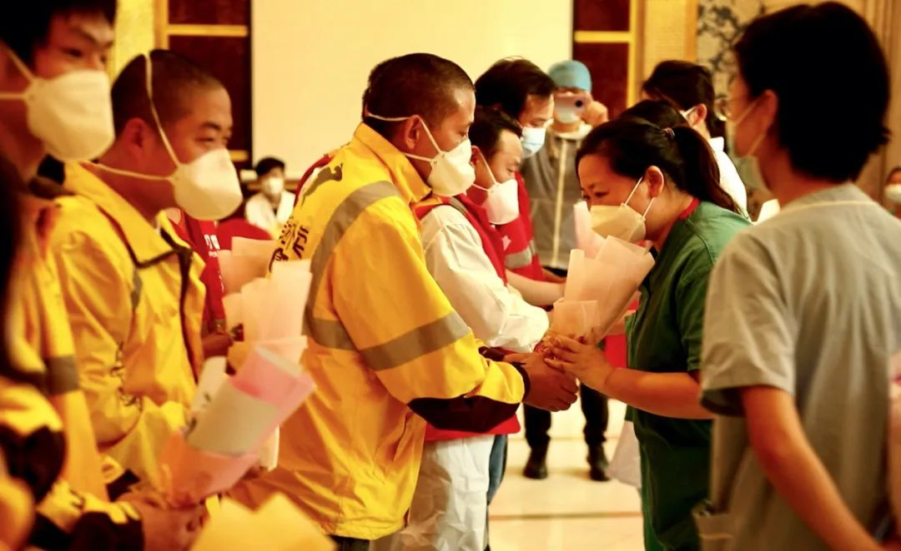
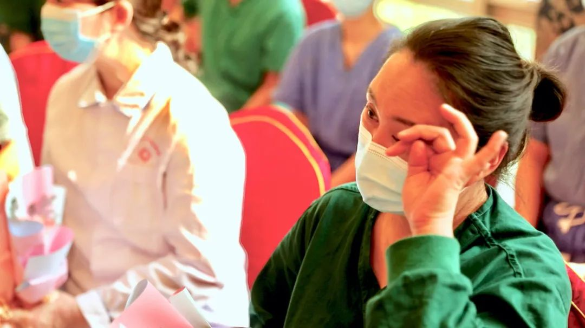
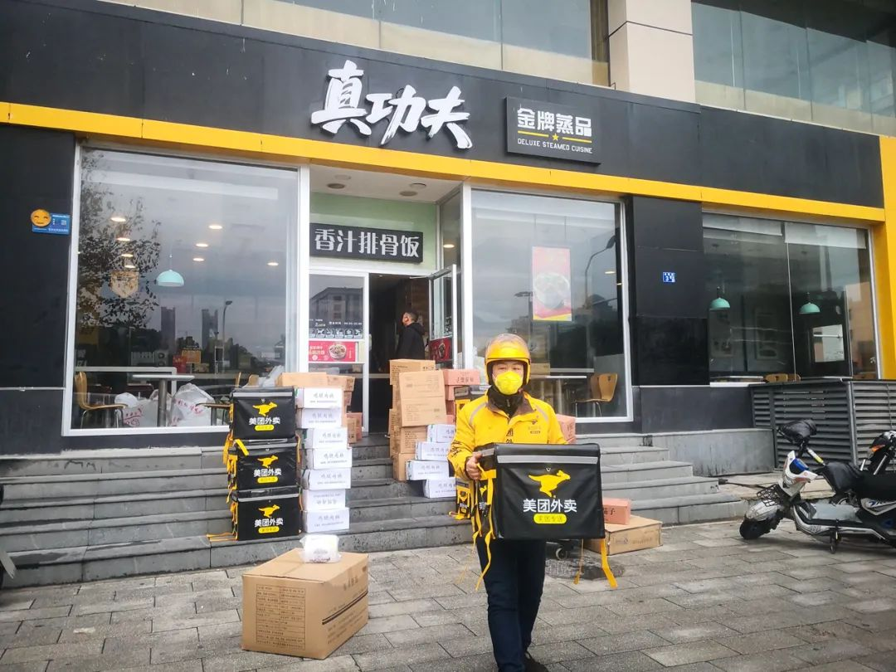
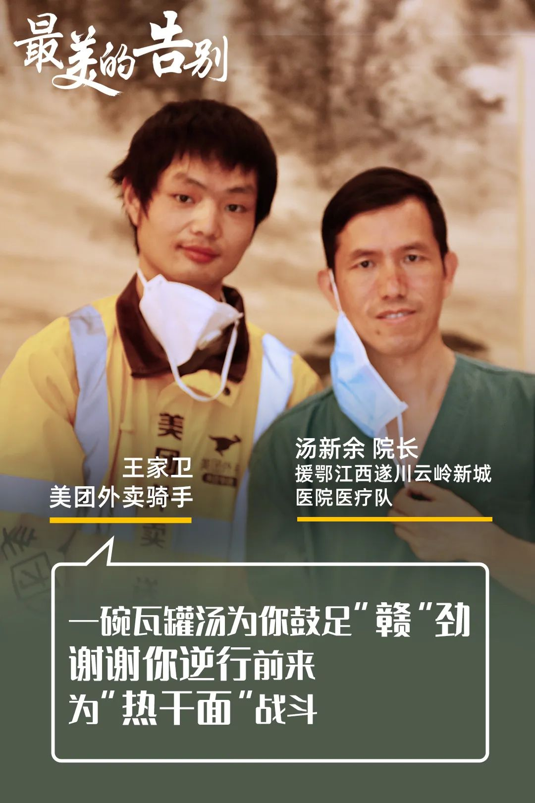

火线 | 确保4万多医护人员“零感染”，有多难？——专访中央赴湖北指导组医疗组专家吴安华
原文链接 备份链接 口述实录·火线 建议将院感课“挤进”所有医本科的教学计划中，可以先给8-10个学时，避免以后再出现类似的惨痛的教训。 记者 | 黄 祺 “到目前为止，4.2万人的医疗队无一人感染。”3月9日，国务院联防联控机制召开新闻 …

烽火不停
粮草不断
武汉外卖小哥彭子龙这几天一直很激动，他拥有了一件最美的工作服。工作服背面，写满了来自援鄂医疗队医护人员的名字和感谢的话。右上角，有个大拇指的造型，旁边写着“太棒了！”。他说，这是最珍贵的礼物。

彭子龙的工作服上，写满了援鄂医疗队医护人员的名字和感谢的话。
随着湖北疫情形势逐渐好转，根据统一安排，援鄂医疗队开始分批次有序撤回。从全国各地参援汉阳医院的27支救援队伍，165名医护人员25日开始分批次撤离回程。两个月以来，他们冲锋陷阵在抗疫一线，并做到医护零感染，圆满完成救援任务，即将和战友们一起安全回家乡。
疫情以来，当无数医护人员“逆行”而上，源源不断的医护紧急专供餐也持续支撑着医护人员毅然前行。1月27日以来，美团外卖联合真功夫、探鱼、麦当劳、喜茶等多家餐饮企业启动“医护紧急专供餐”项目，截至目前，美团为5家武汉市定点发热门诊医院及10余家援鄂医疗队免费送餐，累计送出餐食超过9万份。随着援鄂医疗队逐渐撤回，各大医院食堂逐渐复工，紧急医护专供餐也即将画上圆满的句号。
言出必行，风雨无阻，这是坚守的力量——无论是一线的白衣战士，暖心的外卖小哥，还是爱心餐饮商家、美团平台的组织人员，大家都向着同一个目标，形成了非凡的使命感和强大的凝聚力。

23日，彭子龙和援鄂青岛颐生健中西医结合骨伤医院医疗队辛萌萌摘下口罩留下合影。
“最美的告别”
医护人员大年三十吃泡面的画面戳中了很多人的心。美团立即召集志愿者和爱心商家，迅速启动“医护紧急专供餐”项目。彭子龙看到志愿者司机的召集令第一时间报了名，“生怕晚了就报满了”。91年出生的彭子龙是武汉水果湖片区的站长，原本打算大年三十回家过年，一听说要给医护人员送餐就留了下来。至今，他父母也不知道两个月来他一直出入在各大医院。
23日，彭子龙和队友们在给汉阳医院送餐之后没有立即离开，他们向医护人员送上鲜花，表达心底的感激和敬意。“武汉是我们的家乡，感谢你们背井离乡来救治武汉人，鲜花和掌声送给救命恩人们。”

23日，美团小哥向汉阳医院的援鄂医疗队医护人员送上鲜花表示感谢。
彭子龙没想到的是，这些可爱的“白衣天使”离别之际，也为他们送餐小哥准备了鲜花。潍坊卫恩医院呼吸与重症专家魏春华教授把口罩摘下来再带上。她说，疫情期间你们穿梭在大街小巷，确保医护人员能吃上热乎的饭菜，你们送的不止是饭菜，是一线的“武器”和“弹药”。我希望你们能记住我的样子，留下我的电话，以后等你们有机会来山东，我招待你们。

23日，即将踏上回程的援鄂医护人员收到美团外卖小哥的鲜花，热泪盈眶。
送餐两个月来，虽然每天碰面，但是因为双方都戴着口罩，从没有见过彼此的样子，直到最后告别时，双方都摘下口罩，才算是第一次“见面”。
从第一次进医院“双脚打软”到现在，彭子龙说这些天已经很淡定，“没多大点事，爷们得扛住。”但在魏教授口罩摘下的那一瞬间，他立马红了眼眶，试了几次也没能把眼泪憋回去。“两个月了，这是我第一次见到他们的样子。会永远记在心里。”他说。
支援汉阳医院的重庆医疗队队长朱军，为医护专供餐亲切地起了个名字叫“三兄弟”：“一盒饭、一盒菜、一盒汤，加起来是三兄弟。”他说，“这‘三兄弟’陪我走过了整个疫情，我这辈子都不会忘记。”
在青岛颐生健骨伤医院康复科医师耿蓓蓓眼里，外卖小哥送来的餐食陪伴她度过了50多个武汉的日与夜。“早餐有时是热干面，有时是包子。午餐基本能保证三菜一汤，还时不时变化花样，比如有烤鱼、麦当劳等。”与很多医护一样，当初决定来武汉时，耿蓓蓓是多么义无反顾，“我当时报名时甚至没有跟我父母说过。”来到武汉后，无数次参与凌晨抢救、目睹各种病房里的人间百态，支撑她在抗疫之路继续坚定前行的，除了不变的初心，有时往往只是一顿热气腾腾的饭菜，“这些都实实在在温暖着我们，向你们致敬！”
24日早上11点，探鱼武汉楚河汉街店，他们提供的最后一批医护专供餐完成装车。听说医疗队陆续撤出武汉，门店店长付涛第一反应是“舍不得”。

疫情期间，探鱼门店的十几名店员一直坚守职责，为医护人员提供超过7000份专供餐。一排居中为店长付涛。
两个月来，付涛带着门店的十几名员工，累计提供了超过7000份医护紧急专供餐。每一天，他要统筹协调保障供应，有时又变身大厨亲自掌勺，有时还当上打包员、消毒员……为解决门店人手短缺问题，他们向总部紧急申请从武汉另外5家门店调人帮忙；仓储食材不够，就从东莞分仓紧急调货；买不到烤鱼辅材胡萝卜、新鲜青菜，就各方找人以高价购买；考虑到他们主要供给的医护人员是来自上海的医疗一队和二队，他们及时调整菜谱，以酱香味为主，也有少量香辣味和鲜青椒味；得知医护人员体力消耗大，他们立即决定超额配送；每一份单人餐都自带加热包，倒入一杯冷水10分钟即可完成加热，就是为确保医护人员能吃上热乎的套餐。
作为一个全国有200多家门店的连锁品牌，探鱼在整个疫情期间受影响很大，但这丝毫没有影响他们坚持供应医护餐的信念。“能为抗击疫情做点实在的贡献，是我们餐饮人的职责，他们远离自己的家乡，来保卫我们大家，我们真的感恩，送餐责无旁贷。”
日前，湖北省采取差异化策略，分区分级、分类分时、有条件地复工复产。送走最后一批医护餐，付涛和店员也立即投入新的工作。他们将重新梳理仓库食材，全面做好门店的消毒杀菌工作，提交复工申请，为车水马龙、繁华市井的回归做好准备。
“医护人员太难了，我们都没能好好感谢他们，挺愧疚的。他们也没能好好感受武汉这座城市的美。希望疫情过去后他们能再来，感受我们这座城市的热闹、武汉人民的热情。等那时候，我们把口罩摘了，用最热烈的方式向他们表示感谢！”付涛说。
“烽火未停，粮草怎能断？稳住！”
2月10日前后，是毕潇涵最抓狂的日子。有一天，她接到两个电话，一个是真功夫的工作人员，本来每天是800份出餐量，由于政府紧急征用餐食提供给隔离点，他们医护专供餐的产能一下减到300份；前一天还跟她在群里讨论是“牛肉堡”还是“鸡肉堡”更好的华莱士，本来说好每天提供500份汉堡套餐，但因为道路封闭食材运输不进来，不得不中止供餐。
毕潇涵是负责协调医护专供餐的美团工作人员。从没去过武汉的她，对武汉的地图却了如指掌。项目刚成立，她就在地图上标注了医疗队、医院、商家的位置，再测算出距离和所需时间，再与医院、商户和志愿者司机对接。她甚至会计算经过长江大桥关卡要排队的时间，就是希望确保医护人员午休的一个半小时能正好收到热腾腾的饭菜。
“谁都没见过这么大阵仗。”怎样的防护流程能确保送餐人的安全？全城封闭，从哪里去采购防护物资?如何把医院的需求和商家的出餐对接起来？……慌乱中要迅速理出头绪，毕潇涵把大家的需求整理成一个数据统计表，迅速确定一套送餐流程。
在她看来，项目紧急启动虽然忙乱，但并不难，因为大家都攒着一股劲想做点事。随着疫情态势越来越严峻，小区开始实施封闭管理，城内交通全面停运，这直接影响了商户供应链和人力保障。有的门店员工因为小区封闭不能正常上班，有的购买不到新鲜食材产能直接减半，不少商家就逐渐退出供应医护餐。与此同时，全国驰援武汉的医疗队越来越多。面对供应量陡然下降，一时间大家陷入了深深的焦虑。

医护人员在排队取餐。
可在武汉，疫情的发展速度让人甚至没时间去低落。“办法总比困难多，医护人员冲锋陷阵在一线，我们没有条件也要创造条件。稳住！”
项目组当时确定三个方向，分头行动：一边迅速寻找平台上其他餐饮商户，一边去跟供应链相对充足的商家去“挤”产能，同时也着手采购上千份自加热米饭以备不时之需。全员通宵达旦奋战，不到两天时间，迅速解决了供应难题，重新保证稳定的医护餐供应。
“坚持做对的事，就会有成果。”毕潇涵说。

美团外卖小哥从真功夫商家取好餐食，准备送往各大医院和医疗队。
对彭子龙来说，最难熬的是2月8号晚上。白天给上海医疗队和汉阳医院送完餐之后，晚上9点多，他突然肾结石发作，疼得直不起身，在马路边坐了两个多小时。站里同事把他带到武汉中医院。“医生说炎症很严重，随时有休克风险。平常会建议立马做手术，但疫情太严重，医院不敢收治，开点消炎药就让我回去了。”
躺了两天，几顿头孢一吃，彭子龙感觉自己又活了过来。队友说，你歇着吧，我们轮流把你的活给干了。彭子龙坚决不同意，我年轻，能抗，我要继续送！
运送超9万份医护紧急专供餐的“护胃队”，其实就是由7辆小货车、10个志愿者司机组成的。其中，有6个司机还是美团外卖小哥临时“转行”。刚开始不熟悉送餐路线，他们一天跑上百余公里，把电动车电都跑没了还没返程；每天出入医院和医疗队，说不担心感染风险那是假的，但他们说“总要有人去做”；微信群里，他们互相调侃、鼓劲。彭子龙说，“大家都在，没啥过不去的。等疫情结束，我们把杨姐一直藏着的两瓶茅台拿出来，好好喝一顿！”
美团爱心医护餐也渐渐得到各界爱心人士的支持。2月8日元宵佳节，国家乒乓球队委托美团外卖为武汉汉阳医院等三家医院的医护人员送上2900份工作餐和元宵；热播剧《安家》通过美团医护紧急专供餐行动，送出10000份餐食和下午茶；内蒙古篮协主席巴特尔、射击奥运冠军张梦雪、全国击剑冠军孙伟等爱心人士也纷纷加入医护专供餐行动。
“只要需要，我们一直都在”
从疫情态势严峻以来，美团迅速成立应急指挥中心，尽全力支援前线医护人员。1月26日，美团公益基金会宣布捐赠2亿人民币，设立全国医护人员支持关怀专项基金，对武汉等疫情防控重点地区医护人员以及全国各地驰援湖北的医疗队，通过定向帮扶的形式给予一线医护人员更多的人道救助、生活服务保障、关怀激励。
截至3月20日，基金会已累计发放5339万元，覆盖河南、江苏、安徽、贵州、江西、广东、重庆、辽宁、黑龙江、陕西、上海、甘肃、河北、湖南、宁夏、北京等17个省市区的援鄂医疗队医护人员，受捐赠人数达到10258人，每人5000元慰问金支持。此外，福建等省区市的援鄂医护人员的捐赠活动也在推进中。
为更好地为医疗队做好后勤服务，美团在很多医疗队都安排了专门对接人，通过微信和电话了解他们的需求，协调各方为他们做好生活保障。翻开密密麻麻的工作台账，里面写满了医护人员的困难、心愿、保障工作的完成进度、医疗队方面的反馈等。

美团向江西医疗队赠送50台吹风机。
1月底，为避免空气不流通、空间密闭交叉感染，江西医疗队所在酒店把空调关掉，武汉的冬天没有空调，人体体感湿冷难耐。1月30日，美团多方筹措货源送去了他们急需的138床免费电热毯。
2月初，武汉雨雪天气多，路面结冰严重，江西第一批援鄂医疗队的住所阴冷潮湿，医护人员洗衣服、洗头极为不便。美团了解到这一需求，紧急从北京采购了50台电吹风送到驻地。
2月13日，央视《新闻联播》镜头里，武汉方舱医院医护人员在防护服上写着“想吃热干面”，还有一位医护人员的防护服上写着“周黑鸭”。15日，美团外卖小哥火速将100份热干面和周黑鸭送到方舱医院医护人员的手中。
2月14日，在武汉方舱医院下了夜班的李医生，收到一个蛋糕和一束鲜花，以及一张卡片。这一天，是他和妻子相识三周年的纪念日。两天前，身在四川广元的妻子在美团下了订单，想要给他一个惊喜。100多名骑手在方圆十多公里内，最终找到了开门的蛋糕店和鲜花店。
3月7日，驻扎在雷神山医院的国家中医医疗队的女医生们特别想念奶茶和汉堡，美团了解到这一需求，紧急联系爱心企业，于3月8日下午准备好100多份茶饮和100多份汉堡……
这样的例子不胜枚举。疫情发生以来，为保障一线医院食材供应，美团旗下的快驴进货在34个城市开通了绿色服务通道，每日约为20-30家医院提供食材配送服务；美团单车在湖北地区暂停收费，湖北地区30万美团单车供防疫工作人员免费骑行，并向全国抗疫工作人员捐赠超过215万张免费骑行卡；美团App上线心理免费援助服务，全国1100名心理咨询师在线提供专业服务，上线以来10%用户为医护人员、确诊患者和隔离观察者。另外，美团平台上目前超2300家景区推出了疫情过后对医护人员免费的政策，景区数量还在持续增加中……
彭子龙觉得，能为抗击疫情做力所能及的贡献，很自豪。“只要需要，我们一直都在。我很感恩能有这样的机会为医护人员做点什么，要不然真的会后悔一辈子。”
确认医疗队归程安排和医院食堂复工时间后，毕潇涵松了一口气。这些天，她被太多人感动着。大家互相支撑，彼此依靠，完成了阶段性使命。经此一役，毕潇涵觉得自己沉稳了许多。
“一个人或许可以走得很快，一群人才能走得更远。胜利的曙光已然到来，我们一起等待武汉重启。”她说。



图片来源：美团
本文仅代表作者观点，不代表本刊立场
推荐阅读
▼


原文链接 备份链接 口述实录·火线 建议将院感课“挤进”所有医本科的教学计划中，可以先给8-10个学时，避免以后再出现类似的惨痛的教训。 记者 | 黄 祺 “到目前为止，4.2万人的医疗队无一人感染。”3月9日，国务院联防联控机制召开新闻 …
原文链接 备份链接 - 疫 情 之 下 - 如今，针对医护人员的出行难，政府已出台各种措施，但还是有个别的需求难以得到满足。高宇说，他会一直坚持到医护人员交通困难问题缓解的那一天。 ” 2020年1月23日，武汉市新型冠状病毒感染的肺炎疫 …
原文链接 备份链接 ▲ 武汉骑手老计说：明天太阳会照常升起。（受访者供图） 经此一役，杨静、华浩、李大双、曹新志、胡启等人都明白了一个道理：这是一场“团战”，那些拯救人们于危难中的英雄，也需要被守护。在他们背后的支撑，是城市新基础设施在 …
原文链接 [备份链接]() *************▲ *************2020年2月19日，在武汉市泰康同济医院，军队医护人员互相整理防护服。 （新华社/图） 全文共9028字，阅读大约需要20分钟。 此次派出的县级医院 …
原文链接 备份链接 澎湃新闻综合报道 新冠疫情发生以来，为了方便沟通交流，医护人员在背后写上名字，互相打气。 这些防护服上的字，如无声的誓词。 我们虽然看不见你们的脸庞，却从这些字里看到了希望。 “此行是为救治病人，不达目的不撤兵”——她 …